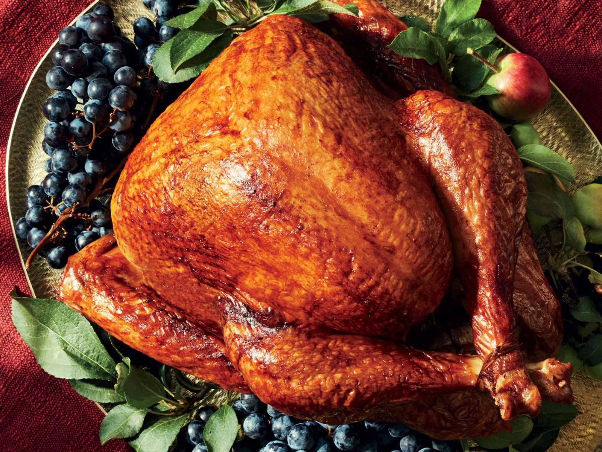

Turkey

Delicious Thanksgiving Turkey for the Family
Dry brining is the easiest way to get a moist and flavorful turkey on the table for your Thanksgiving dinner. Plan ahead, you'll need a few days to get the most flavor. I found that salt and pepper was enough for me, but feel free to season with other aromatics before roasting.
Ingredients
- 1 (15 pound) whole turkey, neck and giblets removed
- 3 tablespoons kosher salt
- black pepper to taste
- 1 onion, cut into wedges
- 4 stalks celery, halved
Steps
- Pat turkey dry with paper towels. Season the inside and outside of turkey with kosher salt, focusing on the breast and thighs. Place turkey, breast-side up, in the roasting pan and cover with plastic wrap. Refrigerate turkey for about 2 days.
- Flip turkey breast-side down, cover with plastic wrap, and refrigerate for about 1 more day.
- Remove plastic wrap and place turkey on a rack over a baking sheet the night before you plan to roast. Allow turkey to air-dry in the refrigerator for at least 8 hours.
- Bring turkey to room temperature, 1 to 2 hours; pat dry with paper towels. Season turkey with black pepper and place onion and celery in the cavity.
- Preheat oven to 425 degrees F (220 degrees C). Place turkey, breast-side down, in a roasting pan.
- Roast in the preheated oven until skin is golden, about 30 minutes. Remove turkey from oven and flip to breast-side up. Reduce oven temperature to 325 degrees F (165 degrees C); continue roasting until an instant-read thermometer inserted into the thickest part of the thigh reads 165 degrees F (74 degrees C), about 2 hours.
- Transfer turkey to a large platter and loosely tent with aluminum foil; allow turkey to rest about 30 minutes before carving.